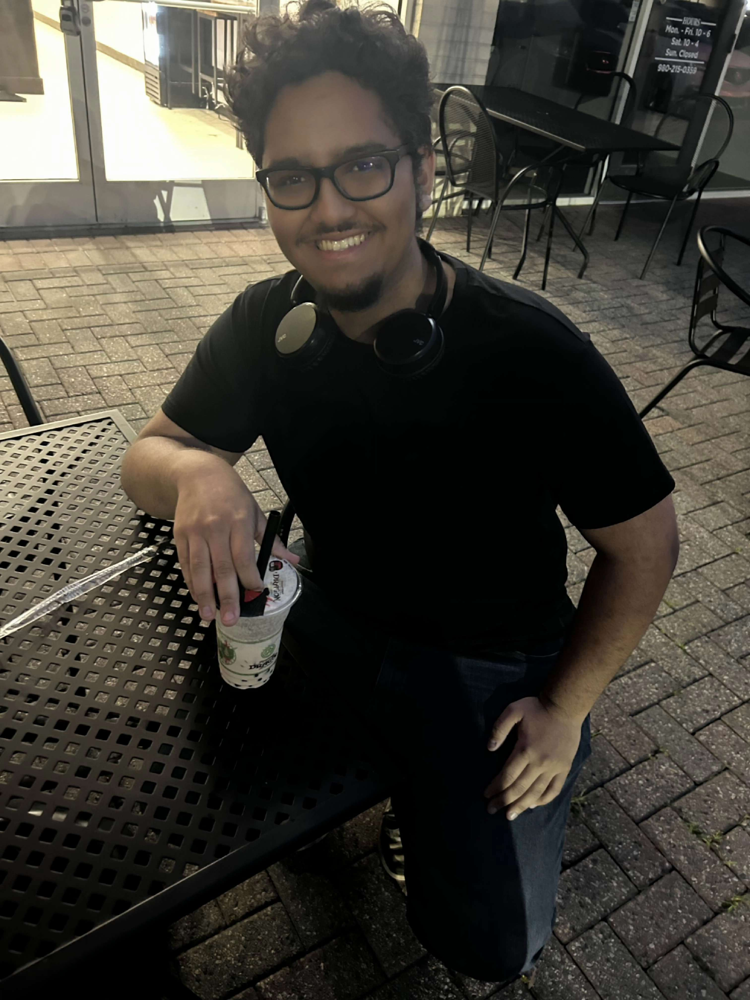

Introduction
On a night out
I'm Angel Antonio Villar Nolasco, student at the University of North Carolina at Charlotte. Im currently pursuing a bachelors of computer science with a concentration in systems and networks.
Personal Background: Im 20 years old, I was born on the Dominican Republic, I love science fiction, spending time with friends, and I LOVE me some good coffee.
Professional Background: During my time as student in both UNCC and CPCC, Ive had my fare share of projects where Ive had to show my abilities using various programming languages such as Java, Python, C, SQL, and RISC-V Assembly; Furthermore, in my own personal time Ive done a couple small projects in Javascript.
Academic Background: I got my Associates Degree on Arts from Central Piedmont Comunity College back on fall of 2024, and I am currently pursuing a bachelors of computer science with a concentration in systems and networks, which Im expecting to get by spring 2027.
Background in this Subject: Ive had some hands-on experience on this topic, mostly using HTML.
Primary Work Computer: Im currently rocking a laptop: a Samsung Galaxy Book5, 12th Gen Intel Core i7-1255U (1.70 GHz).
Backup Work Computer & Location Plan: If I cant use mine for whatever reason, Ill be using one of the many laptops provided by the university in the Atkins Library.
Courses Im Taking and Why:
- ITIS 3135 - Front-End Web Application Development: I took this course because Im a quest to become a jack of all trades, a understand what, how, and why anything computer related works.
- ITSC 3146 - Intro Oper Syst & Networking: I took this course because its a requirement for my concentration, nevertheless, knowing how operating systems and computer networking works, are subgoals for my goal mentioned above.
- ITCS 3166 - Intro to Computer Networks: I took this course because its a requirement for my concentration, and so I can understand how computer networks work and how to keep them working.
- ITIS 3200 - Intro to Info Security & Priv: I took this class mostly because of my goal of becoming a jack of all trades, nevertheless knowing how to maintain a level of security on all the projects I make its highly important.
- ITCS 4102 - Programming Languages: Now this class I took because im genuinely interested in how computer languages work, how they differ from each other in ways other than syntax, and why some companies might use one language over another.
Funny/Interesting item to remember me by: I can play the Saxophone.
"If there's a wall in our way, then we smash it down! If there isn't a path then we create one ourselves!"—Kamina